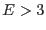

In the pn-CCD, 768 individual amplifiers allow fast readout, but imply different gains for the different readout channels which all have to be determined and corrected for. The gains of the 768 readout nodes were derived by comparing the position of CTI corrected calibration lines (in adu) with their known energy. Since all gain values were found to be close to 5 adu, they were normalized to yield the constant conversion factor 1 adu = 5.00 eV at the nominal temperature, independent of energy, for keV.
More details on the CTI and gain correction can be found in [].